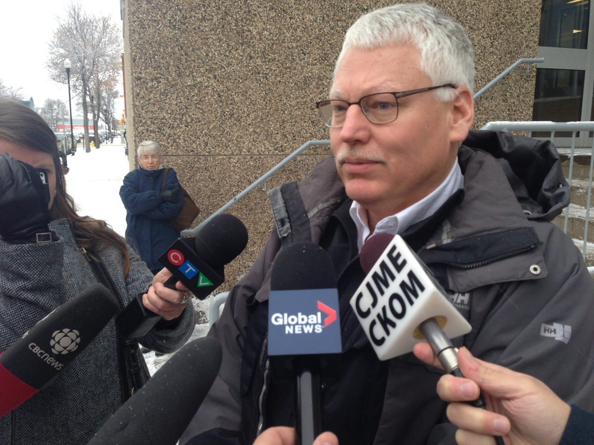
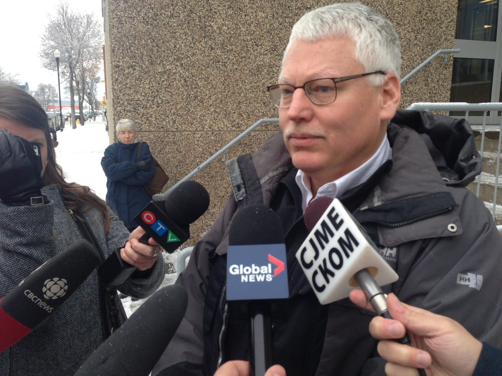
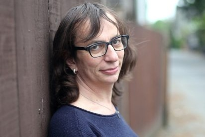
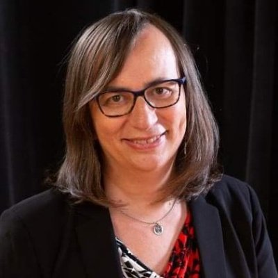
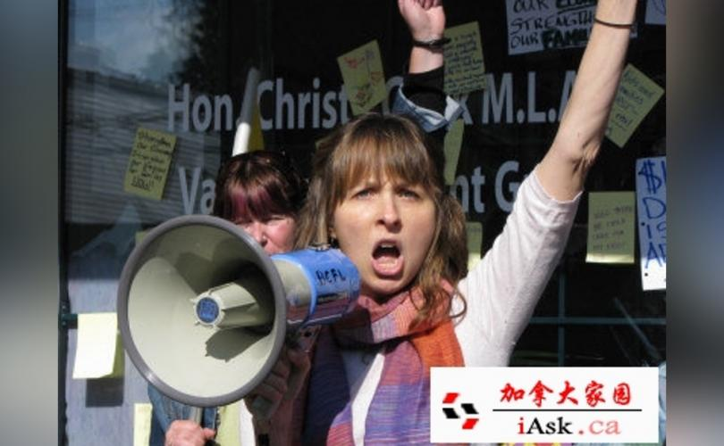
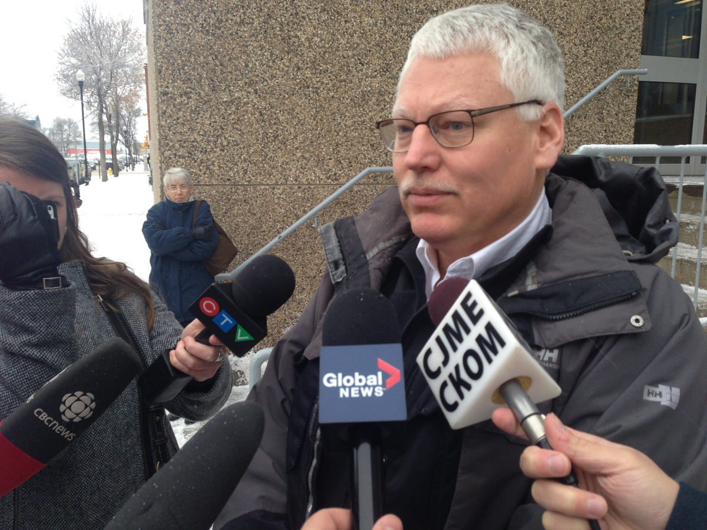

Human Rights Tribunal Member Devyn Cousineau: "Truth is no defense"
April 7th, 2021
Again, another article from 2018, but I'm printing it out because it's before my time.
Life Site News:
TDC_ARTICLE_START
VANCOUVER, British Columbia, June 14, 2018 (LifeSiteNews) – A Canadian Human Rights Tribunal ruled that the “truth” of statements made by a Christian about a transgender political candidate’s biological sex is “not relevant” and cannot be used as a “defence” against allegations that the Christian was engaging in “hate” speech.
Christian and pro-family activist Bill Whatcott was hauled before the Tribunal last year on the grounds that he had engaged in “hate” speech for publicly exposing a transgender political candidate who claimed to be female, but who was born a biological male. The complainant, Mr. Ronan Oger, who now goes by Ms. Morgane Oger, was a candidate in the 2017 provincial election.
Oger is the Vice-President of B.C.’s New Democratic Party (NDP).
TDC_ARTICLE_STOP
Ronan "Morgane" Oger
What are the odds that a creature that looks like that would be called "oger"? It is perhaps too good to be true.
Oh and yeah, he is a dude.
TDC_ARTICLE_START
States court documents: “Ms. [sic] Oger was a candidate in the 2017 provincial election. During her [sic] candidacy, Mr. Whatcott distributed hundreds of flyers in her [sic] riding. The flyers were titled ‘Transgenderism vs. Truth in Vancouver‐False Creek.’ They described Ms. [sic] Oger as a ‘biological male who has renamed himself... after he embraced a transvestite lifestyle.’
TDC_ARTICLE_STOP
 Go off king.
TDC_ARTICLE_START
“Ronan is running for the NDP in the Vancouver-False Creek riding and BC’s media and the NDP are promoting a false narrative that Ronan is a woman born into a male body,” the flyer explained.
“But the truth is Ronan’s DNA will always be male, he will never have a uterus, and no amount of cosmetic surgery, fake hormones, or media propaganda is going to be able to change those facts,” the flyer continued.
TDC_ARTICLE_STOP

Go off king.
TDC_ARTICLE_START
“Ronan is running for the NDP in the Vancouver-False Creek riding and BC’s media and the NDP are promoting a false narrative that Ronan is a woman born into a male body,” the flyer explained.
“But the truth is Ronan’s DNA will always be male, he will never have a uterus, and no amount of cosmetic surgery, fake hormones, or media propaganda is going to be able to change those facts,” the flyer continued.
TDC_ARTICLE_STOP
Bill Whatcott
Whatcott is quite the character, but we must have complete solidarity with him in this case. Complete. Also, what he's saying is 100% accurate, and kind of funny.
That's the thing with trannies, they are only ever going to be seriously disturbing, or hilarious. One of the two.
TDC_ARTICLE_START
Oger, who lost the election, filed a complaint with the B.C. Tribunal in May, 2017, alleging that Whatcott’s flyer was “discriminatory” and exposed transgender people to “hatred and contempt.”
When Whatcott and his lawyer attempted to defend the truth of the flyer, namely that Oger was, in fact, a biological male, Tribunal member Devyn Cousineau would have none of it.
Cousineau ruled that “the ‘truth’ of the statements in the flyer is not a defence.”
“Therefore, to the extent that Mr. Whatcott intends to call witnesses to establish the truth of his impugned publications, that evidence is simply not relevant to the legal issue and will not be heard by this Tribunal,” she wrote. `
TDC_ARTICLE_STOP

Everytime I see his picture I'm a little stunned. Absolutely flabbergasted. He's trying to be all sexy in this picture.
I just... have no words.
Anyway, it's nice to see that this Devyn Cousineau cunt is explicitly saying that "the truth of your little goy-peasant statements are not a defence." Refreshingly honest.
Devyn Cousineau
Very cool Devyn. Very cool.
TDC_ARTICLE_START
Cousineau excluded in the case evidence that Oger is a biological male because she thought it “intrusive.”
“In my view, Mr. Whatcott’s requests are overly intrusive into Ms. [sic] Oger’s privacy and not at all relevant for the disposition of this complaint. Furthermore, the basis for the requests is questionable insofar as they are premised on Mr. Whatcott contesting that Ms. [sic] Oger is a transgender woman. That fact is the very foundation of his publications concerning her [sic] fitness for office.”
TDC_ARTICLE_STOP

The evidence is his fucking face. I know he's a man, by looking at him. I also know he's insane, by looking at him. Sometimes you just know.
TDC_ARTICLE_START
“Her rejection of giving any consideration to the truthfulness of my statements and her admonishment that I can't have any expert testimony that testifies to the truthfulness or accuracy of my statements in my election flyer pretty much means this trial will be no more credible than Stalin's show trials in the former USSR,” he wrote on his blog.
“And I am supposed to expect impartial justice from this leftist kangaroo, who believes the truthfulness of my statements is irrelevant?” he added.
TDC_ARTICLE_STOP
Don't worry goy, you'll get justice from this activist judge
Yeah, Whatcott is correct, except there's nothing "leftist," about this. The Conservative Party of Canada absolutely loves this just as much. What's going on here is judaism.
TDC_ARTICLE_START
“We now have a problem as the human rights judge explicitly stated the truth doesn’t matter,” Whatcott said.
TDC_ARTICLE_STOP
Indeed.

Go off king.
TDC_ARTICLE_START
“Ronan is running for the NDP in the Vancouver-False Creek riding and BC’s media and the NDP are promoting a false narrative that Ronan is a woman born into a male body,” the flyer explained.
“But the truth is Ronan’s DNA will always be male, he will never have a uterus, and no amount of cosmetic surgery, fake hormones, or media propaganda is going to be able to change those facts,” the flyer continued.
TDC_ARTICLE_STOP
